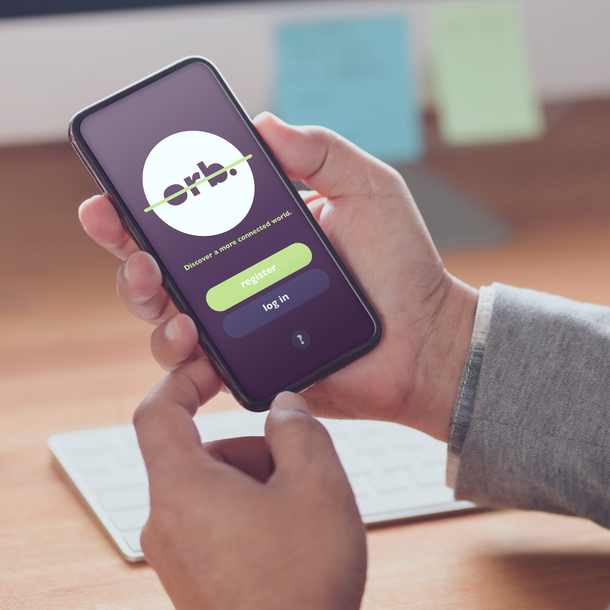

orb.
The world's first publicly available app monitoring international submarine and subterranean cables in a three-dimensional format.

Overview
The internet and other types of communication systems are things that we use on the daily, and yet we never really think about how they work nor their presence in the physical world. To make these systems and infrastructures work, generally mass cable systems are needed to send information from one place to another. These cables don’t just link a country together; they link countries to other countries, continents to other continents. These submarine cables are so vital to today’s society, and most people who use them don’t even know they exist, or don’t care about their existence until something goes wrong.
That’s where ORB comes in.
ORB is a conceptual phone application in which users can discover and monitor the status of submarine and subterranean cables around the world. This would serve a multitude of purposes, from internet and electrical infrastructure education for students, to a globalised monitoring tool for internet and electricity providers. It would even allow for people who are experiencing internet blackouts or lag to discover exactly where and why the situation is occurring, if the problem is due to the monitored cables.
The main feature of the app would be a three-dimensional globe that the users would be able to manipulate in a variety of ways, with the different cables twisting around the globe each a different colour. The user would be able to choose and isolate a single cable line just by tapping it, and then would be able to access specific information about that cable including which countries it connects, who owns it, and its current operating status amongst other statistics. Submarine cable maps such as this, this and this are great resources that allow the user to find out information on specific cables, but they’re not entirely accurate. Our Earth is a spherical shape; this can never properly be accurately depicted on a flat, two-dimensional map, as the proportions for most of the countries are completely wrong. Therefore, the placement of the cables and the directions and angles they’re placed at on two-dimensional maps are inaccurate. A three-dimensional globe would accurately show exactly where and how the cables are placed without any unnecessary distortion.
Inspirations
The inspiration for ORB came from the submarine cable maps linked above. It’s so interesting to see how all the cables connect to different countries and overlap each other. It’s also quite shocking to see the “internet” in its physical form. I never realised that there were cables on the sea floor that connected the world through the internet and other communication mediums, and I think a lot more people would be more appreciative of the internet and device connectivity if they knew the truth.
In terms of the actual application idea itself, I was really inspired by a video by Business Insider that showed a three-dimensional Earth with submarine cables crawling across it. It’s a lot easier to actually imagine the cables when seeing them in 3D as opposed to a flat two-dimensional map, which is harder for our brains to grasp and relate to.
It surprised me that there was so much constant news on these submarine cables – specific news sources inspired me to include a “news” tab in the application mock-up, so it would be easy for users to access relevant news in relation to the cables all in one place.
I found another submarine cable app, and while it had a handful of five-star reviews, there were several constructive and critical reviews that wished that the app had an easier interface to use, or that it really wasn’t that much different from existing websites. This lead me to believe that my idea really was quite unique, and something that would be appreciate amongst those people who are very interested in or have a lot to do with submarine and subterranean cables.
Other Features
The proposed application has many features, with room for development and expansion in the future. These include but are not limited to:
Target Audience
The target audience for this phone app project, ORB, is divided into three main profiles:

While the app could be used by a multitude of other people, the three main target audiences would be the profiles above. Assuming all audience groups are at least somewhat proficient in apps and technology in general, the app user interface should be easy to navigate but doesn’t have to be overly simple. Users should be made to feel like they have some degree of independence and can navigate the application without the need for endless tutorials. The application should also have a rather gender-neutral appearance, and be visually pleasing while still remaining extremely functional.
Logo

The logo for ORB is simple and functional, yet easy to recognise and has high readability. The name “orb.” itself is in the old weight of the typeface Gill Sans, with the “r” edited slightly to suit the style of the app more. The word is cut out in the centre of a circular shape, symbolising the Earth. Overlayed on top of all the elements is a green line, which symbolises the cables that ORB monitors and displays. The colour green was chosen because it is universally symbolic for the ideas of “good”, “on”, “power”, “connectivity” etc, as well as liveliness and nature.
The simplistic nature of the logo means it can easily be inverted to fit in better with clashing colour schemes, or can be simplified further so it can be seen in small formats or as an app icon.


Typography
Gill Sans Bold
Gill Sans Bold is a great typeface to use as it’s a bold sans serif font, which makes it easier to read on screens, even when minimised. The typeface has quite a round, clean feeling that’s clear and simple to read, and lends itself well to tech-based content without seeming cliché. This typeface should be used for all headings in the app and website. Headings should be relatively the biggest in the text hierarchy.
Gill Sans SemiBold Italic
Staying in the same type family to create a sense of flow and unity, Gill Sans SemiBold Italic is a good choice because it doesn’t clash or distract from the most important text (the headings) while still being bold enough to stand out from the body text. This typeface should be used for all subheadings in the app and website.
Calibri Body
Calibri is a good typeface for the main body text of the app and website as it is very simple and has high readability, even at small sizes. Like the Gill Sans type family, it is sans serif. It contrasts nicely in weight and thickness with the heading typeface, while still matching and having a round and clean feeling. This typeface should be used for all body text in the app and website. Body text should be relatively the smallest in the text hierarchy.
Headings
A B C D E F G H I J K L M N O P Q R S T U V W X Y Z
1 2 3 4 5 6 7 8 9 0
. , / ! ? : ; " ' & % ( )
Sub-headings
A B C D E F G H I J K L M N O P Q R S T U V W X Y Z
1 2 3 4 5 6 7 8 9 0
. , / ! ? : ; " ' & % ( )
Body
A B C D E F G H I J K L M N
O P Q R S T U V W X Y Z
1 2 3 4 5 6 7 8 9 0
. , / ! ? : ; " ' & % ( )
Colours


Colour is an incredibly part of any project, but specifically a phone app. The colours need to contrast but not clash, and work harmoniously but not blend into each other. This colour palette is perfect as the colours are analogous and cool-toned, which means they work well together. Out of this palette, #BCE784 is to be used as an accent colour (like the cable line through the logo), while #513B56 is to be used as a background colour. Both white and black text may be used, but only white may be used directly on the darker hues. Other hues between the stated values may be used as transition shades in graphics, illustrations and photographs, but the majority of colours used should be the exact values as outlined.


{kind=link}
{kind=link}
{kind=link}
{kind=link}
{kind=link}
{kind=link}
{kind=link}